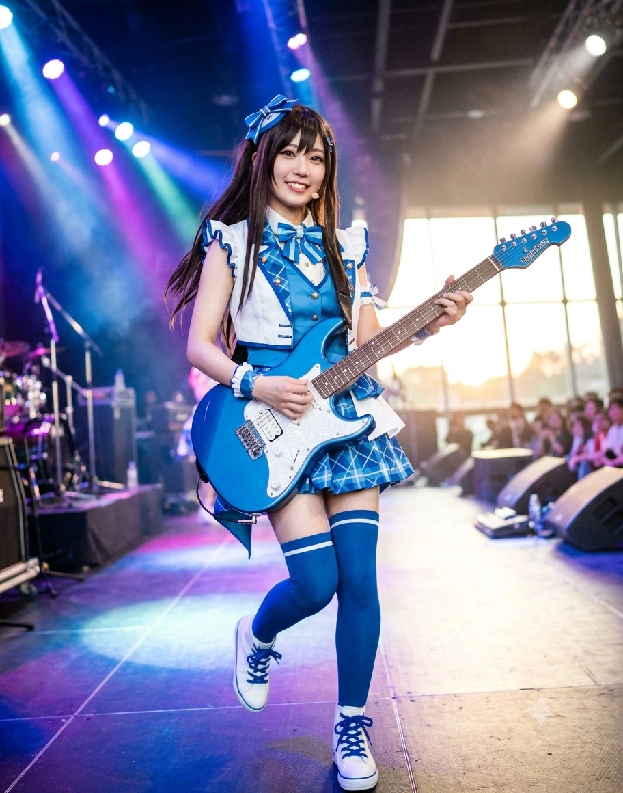

"오드아이의 옷쨩이야~♪ 어라, 서림 언니가 초코 소라빵 먹는 모습을 보니까... 집에 돌아가고 싶어졌어. 우리 집 토끼 20마리가 기다리는 '오다혜(하나조노) 랜드' 입국 비자, 사야 언니랑 우리 착한 제자 서령이, 나나한테도 줄게. 아, 내 약혼자 지호 오빠는 토끼 병원 원장님이니까 이미 종신 공동 국왕 비자 받았어~♪"
"...어? 거기 길 건너에서 확성기 들고 계시는 윤재훈 선배님? 우리 아빠가 오타쿠인 게 뭐 어때서요? 덕질은 죄가 아니지만 횡령이랑 무전취식은 죄랍니다. 지난달 동아리 회식비 15만 원은 언제 내실 건가요?"
대한민국의 현직 수석 미술치료사이자 유명 코스플레이어, 그리고 인디 밴드 『포핀☆스타(Poppin'Star)』의 천재 리드 기타리스트. 효빈 서브컬처의 아버지이자 전 효빈도시공사 사장인 오다구 교수와 숨은 부녀자(Fujoshi) 대모인 어머니 최영숙 여사 사이에서 막내딸(1997년생)로 태어났다. 일명 '성덕(성공한 덕후) 부부'의 완벽한 유전자를 물려받은 효빈시의 성골 적통이다.
서브컬처계와 밴드 판에서 쓰는 공식 닉네임은 '오타에(Otae / おたえ)'다. 이는 본인의 성씨인 '오(吳)'에 자신이 외모부터 4차원 천연 성격, 기타 실력, 심지어 집에서 토끼 20마리를 기르는 습성까지 100% 동기화된 《BanG Dream!》의 하나조노 타에(별명 오타에), 그리고 불같은 참교육과 팩트 폭력을 담당하는 《은혼》의 시무라 타에(오타에)의 이름을 동시에 합친 것이다.[4]평소 선량한 시민들과 언니·후배들 앞에서는 순수하고 엉뚱한 '하나조노 타에' 모드이지만, 아버지 오다구 교수의 원수인 윤대환·윤재훈 부자나 혐오 세력 앞에서는 미소를 지운 채 영혼을 가루로 빻아버리는 '시무라 타에' 모드로 스위치가 전환된다!
본업은 효빈복지대학교 미술치료학과를 졸업하고 활동 중인 완치율 99.9%의 전설적인 미술치료사('덕후 화타')다. 특히 그녀가 대학 학부 실습생 시절이던 2012년, 서구 족포초등학교의 참혹한 학교폭력과 빈곤 속에서 멘탈이 부서져 탈출해 온 아홉 살 소녀 마서령(현 효빈대 사회복지관 사회복지사 겸 사례관리상담사 / 쿠라타 마시로 본체, 154cm)과 심나나(현 (주)토에크 수석 아트 디렉터 겸 효빈경제연구원 애널리스트 / 히로마치 나나미 본체, 157cm)를 맡아 토끼 인형극과 점토 치료로 구원해 낸 생명의 은인이기도 하다! 이 인연으로 마서령과 심나나는 어엿한 성인 전문직이 된 지금도 오다혜와 강숙미를 깍듯하게 '다혜 쌤', '숙미 쌤'이라고 부르며 평생의 스승으로 모시고 있고, 서령 쌤과 나나 쌤의 블루버드 멘티 제자인 안천과학고 이주미(카츠라기 이즈미 본체)는 다혜를 '다혜 대사부님(큰 쌤)'이라 부르며 따른다.
세간에는 과거 효빈시를 좀먹었던 윤대환 전 시장의 아들 윤재훈의 영혼까지 털어버린 전설적인 참교육 일화들로 더 유명하여 효빈 시민들에게 '윤재훈 담당 일진', '비공식 사이다 감사관'으로 추앙받고 있으며, 2026년 현재는 자신의 토끼 20마리를 전담 치료해 준 훈남 특수동물 수의사 한지호(사능동 하나조노 동물병원 원장)와 정식으로 약혼하여 사랑과 커리어 모두 만개한 행복한 나날을 보내고 있다.
1997년 4월 12일(하나조노 타에의 생일인 12월 4일을 뒤집은 날), 덕빈남도 덕현군 화원면(花園面) 화원리에서 2남 1녀 중 막내딸로 태어났다.
사실 아버지 오다구 교수(당시 효빈시청 철도과장)의 본가는 원래 효빈광역시였다. 그런데 만삭이던 어머니 최영숙 여사가 출산 예정일을 2주 앞두고 봄나물을 캐러 친정 본가가 있는 위성 농촌 지역인 덕현군 화원면에 잠시 다니러 갔다가, 화원신호장 옆 산기슭에서 갑자기 양수가 터지고 진통이 시작되는 바람에 효빈시내 병원으로 돌아오지 못하고 화원면 보건지소 산파의 도움으로 급작스럽게 다혜를 출산해 버린 것이다!
어쩌다 보니 출생신고서상의 출생지가 '덕현군 화원면(花園面)'으로 찍히게 되었는데, 놀랍게도 이 화원(花園)의 한자가 훗날 그녀의 분신이 되는 캐릭터 하나조노 타에(花園 たえ)의 성씨 한자와 100% 일치하는 운명적인 우연이 겹쳤다. 이 인연 덕분에 다혜는 훗날 2029년 보통역 승격을 앞둔 화원신호장(화원역)의 명예 홍보대사 겸 화원면 명예 면장으로 위촉되어 화원면을 토끼와 햄버그의 성지로 탈바꿈시키게 된다.
출산 직후 본가인 효빈광역시로 돌아온 다혜는 북구 사능동에서 유년기와 학창 시절을 보내며 효빈사능초등학교, 사능중학교, 고송여자고등학교를 차례로 졸업했다.
어릴 때는 피아노를 배웠으나, 초등학생 시절 동네 뮤직 스쿨에서 어머니 최영숙 여사와 분위기가 무척 닮은 미인 강사님이 일렉트릭 기타를 치는 모습을 보고는 "어라? 우리 엄마가 언제부터 기타를 쳤지?"라고 천연스럽게 착각(?)하여 그날부터 세뱃돈을 차곡차곡 모아 파란색 ESP 스내퍼(Snapper) 기타를 장만해 독학으로 기타 신동의 경지에 올랐다.[5]이 뮤직 스쿨에서 어린 시절의 이아리(7살 언니지만 당시 특기생 반에서 스쳐 지나감)와 와카나 레이(레이야 포지션의 소꿉친구 언니)를 만났던 인연이 있다. 또한 중학교 1학년 시절에는 감라나의 외할머니가 운영하던 라이브 하우스 『SPACE 효빈』에서 알바 겸 연주를 하며 꼬마였던 감라나에게 기타 기초를 가르쳐주기도 했다!
[원작 타에와의 차이점: 성적은 중위권 사수!]
원작 애니메이션 3기 9화에서 하나조노 타에는 이치가야 아리사가 뽑아준 모의 시험지를 풀고도 점수가 엉망진창인 공부 꼴찌로 묘사되지만, 현실의 오다혜는 서울대 토목공학과 출신인 아버지 오다구 교수의 유전자 덕분에 공부를 결코 못하지 않았다! 수업 시간에 창밖을 보며 '민들레 홀씨는 토끼 꼬리랑 닮았네...'라고 딴생각을 하거나 시험지 여백에 점토 토끼 설계도를 그리면서도, 막상 성적표가 나오면 전 과목 깔끔하게 반에서 중간(중위권, 내신 3~4등급)을 찍어 현역으로 효빈복지대학교 미술치료학과(16학번)에 무난히 합격했다.
다혜는 1997년생으로, 1990년생인 강숙미·이아리·우서림과는 7살 차이, 1992년생인 천모카와는 5살 차이, 1994년생인 양사야와는 3살 차이가 나는 막내다. 원래 혼자서만 기타를 치고 라이브 하우스와 악기점 알바를 뛰느라 마음 터놓고 지내는 밴드 친구가 없었으나, 고등학생 시절 사능동 이웃 언니인 양사야의 소개와 HAF 행사장에서 다혜의 거리 버스킹 연주에 반한 강숙미의 돌격("오타에의 기타는 두근거려! 나랑 밴드 하자!")으로 언니들의 밴드 『포핀☆스타』에 리드 기타리스트로 합류하게 되었다.
나이 차이가 꽤 남에도 불구하고 다혜 특유의 거리감 없는 4차원 천연 화법과 언니들의 각별한 막내 사랑 덕분에, 현재는 나이 서열을 초월해 가장 돈독한 5인조 완전체로 활동 중이다.
찰랑거리는 흑갈색 긴 생머리에 신비로운 연두색(올리브 그린) 눈동자, 그리고 촘촘하고 긴 속눈썹을 지닌 공인 쿨뷰티 미녀다. 신장은 164cm로 단신들이 모인 『포핀☆스타』(150cm 우서림, 152cm 이아리, 156cm 강숙미, 157cm 양사야) 내에서 우뚝 솟은 최장신 모델 비율을 자랑한다.
특히 원작 일러스트에서 다소 슬렌더하거나 평범한 체형으로 그려지곤 하는 타에와 달리, 현실의 오다혜는 성장기에 고기(특히 햄버그와 야키니쿠)와 단팥죽을 하루 다섯 끼씩 먹어 치운 덕분에 164cm의 큰 키에 B85(꽉 찬 C~D컵)-W58-H86이라는 상당히 볼륨감 넘치는 건강미 글래머 체형으로 자라났다! 가만히 입을 다물고 서 있으면 청순하고 성숙한 여배우 아우라가 뿜어져 나와 길거리 캐스팅을 수십 번 받았으나, 입을 여는 순간 모든 환상이 4차원 안드로메다로 날아간다.
사능동1가 자택 마당과 별채 방 하나를 개조하여, 왼쪽 눈이 파랗고 오른쪽 눈이 노란 오드아이 대장 토끼 '옷쨩(おっちゃん)'을 포함해 무려 20마리의 토끼 대가족을 기르고 있다. 크리스마스가 되면 "산타 할아버지는 우리 집만 해도 선물이 21개(나+토끼 20마리)나 돼서 힘들겠네"라고 진지하게 걱정할 정도다.
그녀는 토끼들이 사는 이 영역을 신성한 독립 국가인 『오다혜(하나조노) 랜드』라고 부르며, 언젠가 이아리네 전당포 『유성당』 지하 창고까지 영토를 확장하려는 야심 찬 건축 설계도를 품고 다닌다. 심지어 오다혜 랜드에 들어오려면 '입국 비자(Visa)'가 필요한데, 그냥 다혜가 연습장 종이를 찢어 색연필로 토끼 그림과 함께 [비자(ビザ)]라고 적어주면 통과되지만, 누군가 본인이 멋대로 종이에 적어 오면 "위조 비자는 출입국관리법 위반이야. 단속할게"라며 정색하고 쫓아내는 기괴한 원칙을 고수하고 있다. (참고로 현재 이 비자 없이 프리패스로 출입할 수 있는 유이한 인물이 바로 '종신 공동 국왕'으로 임명된 약혼자 한지호 수의사와, 어릴 적 다혜에게 치료받으며 '종신 VIP 비자'를 발급받은 제자 마서령·심나나다!)
말을 할 때 머릿속의 연상 작용 중간 과정을 통째로 생략하고 맨 마지막 결론만 툭 내뱉는 4차원 화법이 특징이다. 예를 들어 자신의 생일(4월 12일)에 언니들이 케이크를 들고 오면 "오늘 누구 생일이기라도 한 거야? ...어? 나?"라고 되묻거나, 우서림(리미 포지션)을 가장 좋아하는(오시) 이유가 "서림 언니가 작은 손으로 초코 소라빵을 오물오물 갉아먹는 걸 보면 → 우리 집 토끼들이 당근 먹는 모습 같아서 → 마음이 포근해지고 집에 돌아가고 싶어지기 때문"이다.[6]다만 눈치는 의외로 엄청나게 빨라서 상대방이 당황하면 "어라? 나 또 이상한 말 했어?"라며 눈을 동그랗게 뜨고, 음악과 소중한 사람의 아픔에 대해서만큼은 누구보다 깊고 진지한 통찰력을 보여준다. (단, 치과 드릴 돌아가는 '드르릭' 소리만 들으면 포커페이스가 완전히 무너지며 식은땀을 흘린다.)
"고기? 안 먹어. 왜냐면 난 채식주의자니까... 농담이야. 하지만 윤대환이랑 윤재훈, 그리고 사능동 전차랑 우리 아빠 피규어를 짓밟은 국민의힘 사람들은 진짜로 인간 취급 안 해. 그건 만우절 거짓말이 아니야."
오다혜는 정식으로 당비를 납부하는 더불어민주당 당원이다. 평소에는 민들레 홀씨를 보며 토끼 꼬리라고 웃는 무해하고 푸근한 4차원 천연 소녀지만, 아버지 오다구 교수의 평생 과업을 짓밟았던 윤대환·윤재훈 부자와 사능동의 역적인 국민의힘 정치인들 앞에서는 웃음기가 싹 가시고 영하 50도의 시니컬한 팩트 폭격기(시무라 타에 모드)로 완벽히 돌변한다!
그도 그럴 것이 다혜가 초등학교 3학년(10살)이던 2006년, 당시 한나라당(국민의힘 전신) 소속 윤대환 시장이 아버지 오다구 사장을 부당하게 파면하고, 아버지가 친딸처럼 아끼던 '고나미 1호 시제품 레진 피규어'를 구두 발로 짓밟아 부순 뒤 시청 밖으로 끌어냈던 날, 장대비 속에서 외장하드를 품에 안고 울면서 귀가하던 아버지의 모습을 똑똑히 보았기 때문이다. 이후 1년 반 동안 아버지가 자택 지하실에 제습기를 돌리며 한바다 굿즈를 지키던 레지스탕스 시절을 함께 겪은 다혜에게, 보수 정당과 윤대환 일가는 단순한 정적이 아니라 가문의 원수이자 문화 파괴범이다.
오다혜가 효빈복지대학교 재학 시절, 대학 연합 봉사 동아리에 가입해 활동하던 중이었다. 당시 동아리에는 고판대학교(원서만 넣으면 붙는 지잡대, 윤대환 부자의 모교, 2017년 폐교)에 재학 중이던 윤재훈이 소속되어 있었다.
문제는 윤재훈이 정식 부원도 아니면서 회장단이 느슨한 틈을 타 몰래 껴서 공짜 밥과 술을 얻어먹고 다니는 무전취식범이었다는 것이다. 그러면서 술자리만 가면 "우리 아빠가 전 시장이다", "곧 정계 복귀하신다"며 꼴불견 허세를 부렸다. 어느 날 회식 자리에서 오다혜가 '모에화 캐릭터 기획자' 오다구 전 사장의 딸이라는 것을 알게 된 윤재훈은 겁도 없이 시비를 걸었다.
"야, 너네 아빠가 그 덕후 사장이라며? 회사에서 짤리고 집에서 인형 놀이나 한다며? ㅋㅋㅋ 쪽팔리지도 않냐?"
순간 술자리는 찬물을 끼얹은 듯 조용해졌다. 그러나 그 순간 오다혜의 눈에서 평소의 맹한 4차원 기운이 완전히 사라지고, 얼음장처럼 차갑고 시니컬한 눈빛으로 맥주잔을 탁 내려놓으며 전설의 반격을 시작했다.
"우리 아빠가 오타쿠인 게 뭐 어때서? 덕질은 죄가 아니야. 하지만 횡령이랑 뇌물수수, 비서관 살인미수는 죄란다, 재훈아. 너네 아빠 지금 어디 계시니? 교도소 콩밥은 입에 맞으신대?"
윤재훈이 얼굴이 붉으락푸르락해져서 말을 더듬자, 그녀는 결정적인 치명타를 꽂아 넣었다.
"그리고 너... 아까부터 계속 선배 행세하는데, 내가 총무 언니한테 확인해봤거든? 너 우리 동아리 정회원 명부에 이름 없더라? 지난달 회식비랑 이번 달 회비, 도합 15만 원은 언제 낼 거니? 무전취식도 유전인가 봐?"
이 한 마디에 윤재훈의 찌질한 실체가 만천하에 드러났고, 그는 쏟아지는 야유 속에 술집에서 쫓겨나 동아리에서 영구 제명당했다. 피는 못 속인다더니 아버지는 세금을 축내고 아들은 동아리 회비를 축냈다 나중에 이 이야기를 전해 들은 아버지 오다구 교수는 "내 딸이지만 정말 맵다... 나보다 낫다"며 감탄을 금치 못했다고 한다.
이 사이다 일화는 알음알음 퍼져나가 현 효빈시장인 박효빈의 귀에까지 들어갔다. 이야기를 들은 박효빈 시장은 집무실에서 배를 잡고 뒹굴 정도로 폭소하며 "역시 교수님의 따님답습니다! 그게 바로 정의구현이죠! 오다혜 씨를 우리 시 홍보대사나 감사관으로 특채해야 하는 거 아닙니까?"라며 쌍따봉을 날렸다.
윤재훈의 수난은 여기서 끝나지 않았다. 2022년 제8회 지방선거에서 9.99%로 선거비용을 전액 날리고 빚더미에 앉아 몰락한 윤재훈은 결국 그해 하반기 효빈시 굿즈 생산 공장에서 강제 노역(?)에 가까운 포장 알바를 하며 연명하고 있었다. 하필이면 본업이 미술치료사인 오다혜가 해당 공장의 근로자 심리 상담 프로그램 자원봉사를 나가게 되었고, 굿즈 상자를 포장하고 있던 윤재훈과 운명적으로 마주쳤다.
"어머, 안녕하세요? 선배님, 드디어 적성에 맞는 일을 찾으셨네요! 인형 포장 솜씨가 아주 예술이세요~ 우리 아빠가 만든 캐릭터 포장하느라 고생이 많으셔~"
이 시니컬한 미소 섞인 인사에 윤재훈은 수치심에 얼굴이 시뻘게져서 고개도 들지 못한 채 한바다 인형 눈만 푹푹 찌르고 있었다고 전해진다. 그러나 윤재훈은 이 공장 알바조차 한바다 인형 눈알을 거꾸로 붙이는 등 불량품을 양산하며 3일 만에 쫓겨났고, 폭행 미수 등으로 감옥에 수감되었다가 2023년 광복절 윤석열 대통령의 황당한 특별사면으로 풀려나 구제 불능의 광신도로 타락하게 된다.
2024년 비상계엄 사태 당시 장난감 총을 들고 '효빈지구 계엄사령관' 행세까지 하며 전국적인 비웃음거리가 된 윤재훈은, 2026년 6월 제9회 전국동시지방선거에 기어코 국민의힘 공천을 받아 효빈광역시장 후보로 재도전하는 대형 사고를 쳤다. 당시 국민의힘 당 대표였던 장동혁이 윤재훈의 광신도적인 윤석열 숭배 성향을 높게 사서 무리하게 낙하산 공천을 꽂아 넣었다는 것이 정설이다.
어느 날, 윤재훈은 당가동 한복판에 유세차를 세우고 확성기를 든 채 "저 윤재훈! 밑바닥 공장 노동자로 일하며 서민의 땀과 눈물을 배웠습니다! 각하의 뜻을 받들어 윤석열 대통령님을 지키고 효빈시의 빨갱이 오타쿠들을 쓸어버리겠습니다!"라며 눈물겨운 감성팔이 코스프레를 시전하고 있었다. 하필 점심시간에 약혼자 한지호 원장과 데이트 후 단팥죽 라떼를 빨며 그 앞을 지나가던 오다혜가 이 꼴을 목격하고는, 유세차 앞 군중들 사이를 뚫고 들어가 목청껏 사자후를 내질렀다.
"선배님!! 공장장님이 선배님 불량품만 오지게 내고 한바다 눈알 거꾸로 붙였다고 3일 만에 짤랐다던데 그새 정치판으로 도망치셨어요?! 저번에 당가동에서 장난감 총 들고 계엄사령관 놀이하다가 상인들한테 파리채로 쳐맞고 질질 짜셨다면서요?! 장동혁 대표님한테도 그렇게 사기 쳐서 공천받으셨어요?!"
이 한 마디에 유세장 분위기는 싸늘해졌고, 지나가던 시민들은 빵 터져서 배를 잡고 웃기 시작했다. 거짓말과 흑역사가 한 번에 들통난 윤재훈은 사색이 되어 마이크를 떨어뜨리고 유세차 뒤로 숨어버렸다. 이후 길거리에서 우연히 오다혜와 다시 마주친 윤재훈이 "히익!" 소리를 내며 전단지를 내팽개치고 반대편 골목으로 전력 질주했다는 목격담은 전설로 남아있다.
| 기간 | 정당명 | 비고 |
|---|---|---|
| 2016~현재 | 더불어민주당 | 효빈시 청년문화예술위원회 자문위원 |
1997년생으로 언니들보다 3~7살 어린 막내이지만, 언니들에게 반말과 존댓말을 자유자재로 섞어 쓰며 누구도 예측할 수 없는 4차원 폭탄을 던지는 동시에 음악적으로는 가장 진지하게 밴드를 지탱하는 리드 기타리스트다.
1997년생(만 29세)인 오다혜는 1990년생 큰언니들(강숙미, 이아리, 우서림)과 2003~2005년생 후배들(마서령·심나나의 모르포니카, 김시연 사단 및 고다솔의 미아 밴드)의 딱 중간 나이대에 위치하여, 세대를 하나로 묶어주는 가장 친근한 '징검다리 언니'이자 후배들의 상처를 어루만져 준 위대한 '스승님(다혜 쌤)' 역할을 하고 있다.
특히 미아(MyGO!!!!!) 밴드의 천재 기타리스트 감라나(05년생)가 중학교 1학년 시절 외할머니의 『SPACE 효빈』에 죽치고 있을 때, 당시 스무 살 대학생 알바생이던 오다혜가 라나를 무릎에 앉혀놓고 일렉트릭 기타의 크로매틱과 블루스 스케일을 가르쳐주며 함께 놀아주었던 직속 사제 관계(원작 극장판 전편 오리지널 회상 씬 고증)다! 이 때문에 누구에게나 반말로 일관하는 길고양이 감라나도 오다혜 앞에서는 "다혜(타에), 기타 치자"라며 고분고분하게 잘 따른다.
'덕후 화타' 오다혜의 미술치료사 커리어에서 가장 눈물겹고도 위대한 첫 번째 기적은, 바로 창전구 『모르포니카』의 보컬 마서령(2003년생, 현 효빈대 사회복지관 사회복지사 겸 사례관리상담사 / 쿠라타 마시로 본체, 154cm)과 베이시스트 심나나(2003년생, 현 (주)토에크 수석 아트 디렉터 겸 효빈경제연구원 애널리스트 / 히로마치 나나미 본체, 157cm)가 가장 어둡고 힘든 터널을 지나던 유년기와 학창 시절에 그들을 구원해 준 서사다!
[1단계: 2012년 가을, 족포초 지옥에서 탈출한 아홉 살 소녀 마서령·심나나와의 첫 만남과 '토끼 인형극·파란 나비 점토' 치유]
2011~2012년 당시, 아버지 인쇄소 부도와 전세 사기(마서령), 그리고 미술품 사기 피해와 어머니의 난치병 투병(심나나)으로 인해 서구 내성동 반지하 단칸방으로 밀려났던 아홉 살의 마서령과 심나나는 효빈시 최악의 마굴이었던 족포초등학교에서 인간 이하의 집단 괴롭힘을 당했다.
서령이는 예쁜 외모를 질투한 못생긴 여왕벌 일진들에게 머리카락이 껌과 본드로 범벅되어 잘리고, 어머니가 떠준 손뜨개 가방에 음식물 쓰레기와 걸레 구정물이 부어졌으며, 공상 동화 노트가 찢겨 변기에 수장당했다. 나나 역시 '노가다 거지 도둑년'이라는 모함 속에 만점 시험지가 입에 쑤셔 넣어지고 병상의 엄마를 위해 그린 수채화 도화지가 먹물과 구둣발에 짓밟혀 오른손 손가락이 다쳤다. 결국 두 소녀가 목숨을 건 용기로 부모님께 피해 사실을 고백하고 창전구(창전초·칠심초 및 칠심3동 다세대 빌라 옆집)로 긴급 탈출했을 때, 두 아이의 정신 상태는 극도로 위험한 지경이었다. 서령이는 어른과 낯선 또래만 보면 목소리가 나오지 않는 '선택적 함구증'과 중증 소아 우울증에 빠져 있었고, 나나는 자신의 재능을 죄악시하며 오른손으로 붓을 잡지 못하고 일부러 왼손으로 삐뚤빼뚤한 그림만 그리는 '보통(평범) 위장 강박증'에 걸려 있었다.
이때 창전구 시립 아동청소년심리상담센터에서 두 아이의 전담 미술·놀이치료 멘토 선생님을 맡은 인물이 바로 당시 예비 미술치료사 학부 실습생(청소년 재능기부 멘토)이던 오다혜('다혜 쌤')였다!
첫 상담 날, 책상 밑으로 기어들어 가 커터칼에 난도질당해 솜이 터진 '파란 나비 뜨개질 인형'을 끌어안고 덜덜 떨며 한마디도 못 하는 마서령을 본 오다혜는, 억지로 말을 시키거나 상담 기록지를 들이밀지 않았다. 대신 다혜는 자신의 가방에서 오드아이 토끼 인형('옷쨩 1호')을 꺼내 손에 끼우더니, 자신도 책상 밑으로 나란히 기어들어 가 4차원 복화술(?)로 말을 걸었다.
오다혜 (토끼 인형 목소리): "어라? 안녕, 나는 사능동에서 온 토끼 옷쨩이야~ 내 왼쪽 눈은 파란색이고 오른쪽 눈은 노란색이라서, 못된 애들이 나보고 이상한 괴물 토끼라고 놀렸었어. 근데 다혜 쌤이 그러는데, 남들이랑 다른 눈이랑 작은 목소리는 하늘에서 준 '마법의 주파수'래! 네가 안고 있는 그 파란 나비 친구는 날개를 다쳤구나? 우리 옷쨩이랑 다혜 쌤이 하늘색 지점토랑 털실로 더 예쁜 날개를 다시 달아줄까~?"
마서령 (당시 9세): (3개월 동안이나 닫혀 있던 입술이 파르르 떨리더니, 토끼 인형의 귀를 조심스럽게 만지며 마침내 눈물 섞인 첫 목소리를 낸다) "...토, 토끼야... 내 나비 인형도... 다시 날 수 있어...? 내가 목소리가 작고 가난해서... 나비가 다친 게 아니야...?"
오다혜 ('다혜 쌤'): (특유의 포근하고 맑은 연두색 눈동자로 서령이를 따뜻하게 안아주며) "당연하지 서령아! 나비가 다친 건 꽃밭을 망가뜨린 나쁜 벌레들 탓이지, 꽃처럼 예쁜 서령이 탓이 절대 아니야. 자, 이제 다혜 쌤이랑 같이 파란색 점토로 세상에서 제일 커다란 나비 날개를 빚어보자!"
동시에 다혜 쌤은 옆자리에서 실눈을 뜨고 왼손으로 일부러 못난 졸라맨만 그리고 있던 심나나의 도화지를 가만히 들여다보더니, 나나의 다친 오른손을 자신의 두 손으로 감싸 쥐었다.
오다혜 ('다혜 쌤'): "그리고 우리 나나. 왼손으로 일부러 못 그린 이 선들 속에서도, 나나가 엄마를 얼마나 사랑하는지, 그리고 나나가 얼마나 눈부신 천재 화가인지 다혜 쌤 눈에는 별빛처럼 다 보여. 지금은 무서우면 '보통'이라는 토끼굴 속에 잠시 숨어 있어도 괜찮아. 하지만 절대 네 오른손을 미워하지는 마. 언젠가 너와 서령이를 있는 그대로 사랑해 주는 진짜 친구들을 만나면, 그때 이 다혜 쌤이 준 황금색 물감으로 마음껏 날개를 펼치렴!"
이 기적 같은 6개월간의 미술치료 덕분에 서령이는 함구증을 완벽히 이겨내고 다시 노래를 흥얼거릴 수 있게 되었고, 나나 역시 내면의 자존감을 지켜낼 수 있었다. 그날 이후 마서령과 심나나에게 오다혜는 평생의 은인이자 영원한 "다혜 쌤"이 되었다!
[2단계: 고1 『모르포니카』 탈주 위기 당시 강숙미('숙미 쌤')와의 빗속 합동 구원 작전!]
시간이 흘러 2019년 봄, 창전구 평준화 일반고인 월삼여자고등학교 1학년이 된 마서령이 부잣집 아가씨들 사이에서 위축되어 있을 때, 반장 이주시의 손에 이끌려 찾아간 중앙로 『RiNG 효빈점』 무대에서 강숙미('숙미 쌤')와 오다혜('다혜 쌤')가 속한 『포핀☆스타』의 공연을 보게 되었다. 무대 아래로 내려온 다혜 쌤이 "어라? 우리 서령이랑 나나, 어느새 이렇게 예쁜 고등학생이 되었네~!"라며 반갑게 안아주자, 서령이는 오열하며 숙미 쌤과 다혜 쌤의 지도를 받아 밴드 『모르포니카』를 결성했다.
특히 첫 라이브에서 긴장감에 음정이 나가 '못부르니카'라는 악플 세례를 받고 옛 족포초 트라우마가 도진 서령이가 "나 밴드 안 해!"라며 빗속으로 도망쳤을 때, 서령이가 숨어 있을 만한 장소(어릴 적 다혜 쌤과 파란 나비 점토를 빚었던 창전공원 정자)를 단번에 짚어내어 강숙미와 함께 달려간 사람도 바로 오다혜였다! 숙미 쌤이 우산을 씌워주며 "포기하지 않고 다시 노래하면 그게 바로 너만의 별빛이야!"라고 손잡아 주고, 다혜 쌤이 따뜻한 단팥죽 캔을 서령이의 볼에 대주며 "서령아, 비를 맞은 나비는 날개가 젖어서 잠시 못 날 뿐이야. 다혜 쌤이랑 숙미 쌤, 그리고 모니카 친구들이 말려줄 테니까 다시 날아보자"라고 다독여준 덕분에 서령이는 눈물로 복귀해 명곡 『Daylight』를 탄생시킬 수 있었다.
[3단계: '오다혜 쌤 ➡️ 마서령·심나나 쌤 ➡️ 이주미'로 이어지는 3대(代) 치유 계보와 중2병 노트 극찬 사건!]
초등학교 시절 '다혜 쌤'과 '숙미 쌤'에게 구원받았던 154cm의 소녀 마서령은, 스승님들의 발자취를 따라 2022년 효빈대학교 사회복지학대학 사회복지상담학과(22학번)에 진학했다. 그리고 학부생 시절 박효빈 시장이 만든 『블루버드 멘토링단』의 멘토 선생님이 되어, 똑같이 족포초 피해자 후배인 안천과학고 지망생 이주미(카츠라기 이즈미 본체, 170cm)를 맡아 가르치게 되었다.
이때 효빈청소년마음치유센터 수석 미술치료사가 된 오다혜는 제자 마서령 쌤과 심나나 쌤의 '임상 슈퍼바이저(지도 스승)'로서 주미의 '감정 거세(국어 문학 거부반응)' 치유 커리큘럼을 함께 설계해 주었다! 덕분에 이주미는 마서령을 '서령 쌤', 심나나를 '나나 쌤'이라 부르고, 두 선생님의 스승인 오다혜와 강숙미를 '다혜 대사부님(큰 쌤)', '숙미 큰 쌤'이라 부르며 깍듯하게 모신다.
심지어 멘토링 도중 마서령 쌤이 주미에게 실수로 자신의 흑역사 중2병 공상 노트(『선혈의 장밋빛 인생 - 블러디 라비앙 로즈』)를 빌려주어 주미가 중저음 보이스로 낭독하는 바람에 서령 쌤이 수치사로 책상 밑에 기어들어 갔을 때, 마침 참관하러 들어온 오다혜 쌤이 그 주문을 듣더니 진지한 얼굴로 손뼉을 쳤다!
오다혜 ('다혜 쌤'): "우와아... 서령아, 방금 주미가 읽은 그 '칠흑 같은 어둠을 가르는 일만 마리의 푸른 모르포 나비와 선혈의 장밋빛 인생'이라는 구절... 미술치료 색채심리학적으로 보면 무의식의 검은색(트라우마)을 파란색(희망)과 붉은색(생명력)으로 통합해 내는 완벽한 만다라(Mandala) 치유 주문이야! 우리 서령이, 이제 다혜 쌤보다 글을 더 멋지게 쓰네~ 주미야, 그거 백 번씩 읽으면 국어 만점 받겠다~♪"
마서령 ('서령 쌤'): "으아아앙 다혜 쌤까지 왜 그러세요오오 ㅠㅠㅠ 칭찬하지 마세요 수치스러워요오오!!"
2026년 현재 마서령이 대학을 졸업하고 효빈대 부설 종합사회복지관의 정식 사회복지사 겸 사례관리상담사로 임용된 뒤에도, 오다혜는 서령이의 가장 든든한 슈퍼바이저 스승님으로서 매주 사능동과 창전구를 오가며 합동 사례회의와 햄버그·비프 스프 파티를 즐기고 있다.
오다구 일가답게 대한민국 서브컬처 역사에 길이 남을 범상치 않은 가풍을 자랑하며, 여기에 오다혜의 4차원 세계관과 토끼 20마리를 통째로 품어준 성인군자 약혼자까지 합류해 완벽한 대가족을 이루고 있다.
1995년생(만 31세, 신장 182cm). 효빈대학교 수의과대학(14학번)을 수석 졸업하고 현재 북구 사능동(3호선 사능역 인근)에서 특수동물(토끼·소동물) 전문 병원인 『하나조노 동물메디컬센터』를 운영 중인 훈남 수의사 원장님이다.[9]오다혜가 기르는 대장 토끼 '옷쨩'이 급성 위장 정체증(식체)으로 쓰러졌을 때 한밤중에 달려와 생명을 살려낸 토끼·특수동물 전문 수의사다! 다혜의 4차원 화법을 통역기 없이 100% 이해하고 토끼 20마리의 무료 주치의를 자처한 끝에, 다혜로부터 '오다혜(하나조노) 랜드 종신 공동 국왕 비자'를 발급받고 2026년 봄 정식으로 약혼했다!
두 사람의 인연은 2023년 겨울 새벽 2시, 오다혜가 자신의 분신처럼 아끼는 오드아이 대장 토끼 '옷쨩'이 토끼에게 가장 치명적인 급성 위장관 정체증(식체, GI Stasis)으로 호흡이 가빠지며 쓰러졌을 때 시작되었다. 평소의 포커페이스가 완전히 무너진 다혜가 눈물범벅이 되어 맨발에 패딩만 걸친 채 옷쨩을 품에 안고 사능동 거리를 뛰어가 문을 두드린 곳이, 마침 그달에 새로 개원해 24시간 야간 응급 당직을 서고 있던 한지호 원장의 동물병원이었다!
한지호 원장은 밤새워 정밀 수액 처치와 복부 마사지, 위장관 운동 촉진 치료를 시행해 옷쨩을 기적적으로 살려냈고, 지쳐서 대기실 의자에서 잠든 다혜의 어깨에 자신의 하얀 수의사 가운을 덮어주었다. 아침에 눈을 뜬 다혜가 건강하게 건초를 오물거리는 옷쨩과 온화하게 미소 짓는 한지호 원장을 번갈아 보더니, 연습장을 찢어 [오다혜 랜드 종신 입국 비자 (등급: 토끼들의 생명의 은인)]이라고 적어 건넨 것이 첫 프러포즈(?)가 되었다.
[오다혜 & 약혼자 한지호 원장의 4차원 천생연분 케미]
• 중간 과정 생략 화법 100% 동시통역 능력자: 다혜가 뜬금없이 "지호 오빠, 오늘 구름이 양배추 같아. 그래서 저녁엔 철판이 필요해"라고 중간 과정을 생략하고 말하면, 이아리조차 "무슨 외계어냐?!"라고 당황하는 와중에 한지호 원장은 0.1초 만에 "아, 구름이 양배추 같아서 토끼들 간식 챙겨주고 나니까, 저녁엔 양배추 듬뿍 얹은 철판 데미글라스 햄버그 스테이크가 먹고 싶다는 뜻이지? 내가 퇴근길에 소고기 다짐육 사 갈게~"라고 완벽하게 해석해 내어 『포핀☆스타』 언니들을 경악하게 만들었다!
• 장인어른 오다구 교수와의 찰떡궁합: 알고 보니 한지호 원장 역시 학창 시절부터 오다구 교수가 만든 1호선 고나미와 3호선 박라미 굿즈를 모으던 성실한 서브컬처 팬이자, 토끼 20마리의 예방접종과 건강검진을 평생 무상으로 책임지는 일등 사위감이었다. 상견례 날 오다구 교수에게 단종된 '고나미 초기 스케치북 복각본'을 예물로 바쳐 장인어른의 프리패스 승낙을 받아냈다.
• 2026년 봄 정식 약혼: 2026년 봄, 두 사람은 양가 가족과 『포핀☆스타』 언니들(강숙미, 이아리, 우서림, 양사야), 그리고 제자인 마서령 쌤·심나나 쌤 커플의 축복 속에 정식으로 약혼식을 올렸다. 지호가 다혜의 왼손 약지에 끼워준 반지는 하나조노 타에의 상징색인 '스카이 블루 사파이어에 작은 토끼 귀 세공이 들어간 커스텀 약혼반지'로, 다혜는 상담할 때나 기타를 칠 때마다 반지를 보며 "지호 오빠랑 있으면 우리 집 옷쨩 스무 마리가 동시에 안아주는 것처럼 따뜻해~♪"라며 행복해한다.

2023년 HAF 행사장에서 있었던 희대의 해프닝. 오다혜는 이날 아버지가 직접 기획했던 1호선 마스코트 고나미 1세대 레진 피규어 버전을 완벽하게 코스프레하고 행사장을 누비고 있었다. 마침 한정판 굿즈 대기열에 벙거지 모자와 마스크로 변장하고 서 있던 오다구 교수가 그 퀄리티에 감탄하며 다가가 "학생, 고나미 1세대 버전 고증이 아주 훌륭하구먼. 내가 기획자인데, 사진 한 장 찍어도 되겠나?"라고 정중히 요청했다. 아버지의 목소리를 단번에 알아챈 오다혜는 속으로 경악했으나, 정체를 들키지 않으려고 꾹 참고 캐릭터 포즈를 취해줬다.
그날 저녁, 집에 돌아온 오다구 교수는 아내에게 "오늘 행사장에서 역대급 고나미 코스어를 봤어! 옛날 생각나더라구"라며 낮에 찍은 사진을 자랑스레 내밀었다. 그 사진을 본 아내 최영숙 여사는 오다구의 등짝을 세게 후려치며 소리쳤다. "이 양반아, 이거 우리 막내딸(다혜)이잖아!!" 그제야 전말을 깨달은 오다구 교수는 크나큰 충격에 휩싸여 3일 동안 딸의 얼굴을 똑바로 쳐다보지 못했다고 한다. 성덕 아버지의 눈먼 덕심이 낳은 비극
오다혜의 직업병은 상당히 특이한데, 처음 보는 사람의 옷 색깔이나 액세서리 배치만 보고도 무의식적으로 "이 사람은 무슨 애니메이션을 파고 있구나"를 프로파일링 해버리는 무서운 통찰력을 지녔다. 심한 대인기피증이나 우울증을 앓고 있는 청소년 내담자가 오면, 내담자가 끄적거린 그림의 눈매 묘사만 보고도 "너 쿄애니 작화 좋아하지? 최애가 누구니?"라고 정곡을 찔러 단번에 무장해제를 시켜버린다.
상담에 애니메이션 명대사와 세계관을 활용하거나, '치료 도구로 건프라 조립하기', '점토로 자기만의 토끼 랜드 만들기', '애니메이션 성지순례 심리 지도 그리기' 같은 파격적인 미술치료 기법을 고안해 냈다. 초창기 시청 복지과에서는 "이게 무슨 치료냐"며 예산 삭감을 시도했으나, 마서령·심나나·고노애·고하루 등을 완벽히 치유해 낸 완치율 99.9%라는 경이로운 통계를 내밀며 공무원들을 데꿀멍하게 만들었다. 학부모들과 상담계에서는 그녀를 '덕후 치료계의 화타'라고 부른다.
현 효빈광역시 수장인 박효빈 시장은 윤재훈 참교육 사건과 족포초 후배들(마서령, 심나나 등)을 구원해 준 공로로 오다혜를 격하게 아끼며 존경하고 있다. 사회복지학을 전공한 박효빈 시장과 복지대학교 미술치료학과 출신인 오다혜가 사석에서 만나면, 청소년 복지 정책이나 뱅드림 이벤트 보더컷 이야기를 하다가도 이내 윤재훈의 심리 상태 분석으로 화제가 넘어가 열띤 토론을 벌이곤 한다.
오다혜가 치료사의 관점에서 "시장님, 그 선배가 그렸던 낙서들을 투사적 그림 검사 기법으로 분석해보면, 심각한 애정 결핍을 기반으로 한 뒤틀린 과대망상이 보입니다"라고 분석하면, 박 시장이 고개를 끄덕이며 "행정책임자로서는 영구 격리해야 마땅하지만, 복지적 차원에서는 평생 공장에서 인형 눈알을 붙이는 노동 치료를 통해 자아를 수양하게 하는 게 맞겠군요"라며 진지하게 맞장구를 친다. 박 시장은 그녀에게 시청 청년복지위원장이나 정계 입문을 꾸준히 권유하고 있으나, 오다혜는 "토끼들 밥 주고 약혼자 오빠랑 햄버그 먹고 기타 치고 코스프레 할 시간도 부족한데 정치는 무슨 정치입니까"라며 쿨하게 철벽을 치고 있다.